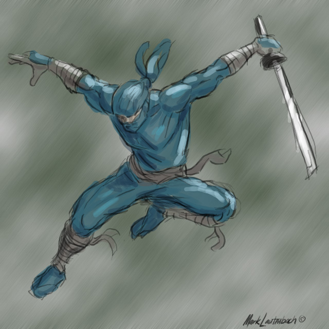
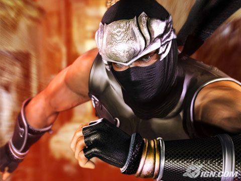
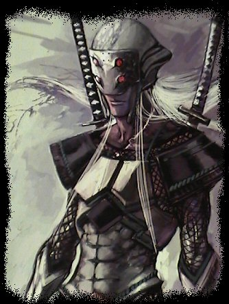
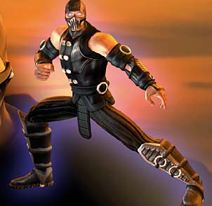

#7895 1 2006-04-05T19:28:27Z kai well, we all know his pixlated form...but what would he look like in real life?
here are a few pics that i think are reasonably correct, but of course everyone probably has a different view of N...so please feel free to post yours and compare!




heh...noob saibot is a definate winner for me.
#162250 3 2006-04-05T20:03:49Z blue_tetris None of those look like real ninjas, either. They all look drawn or computer-generated.
Also, the first is carrying a sword (which real ninjas never had); the second has a metal helm and metal bracers (also things ninjas never had); the one below that has two swords; and the last one has some sort of metal grill over his mouth, is dressed in a Chinese buckled kung fu gi, and some sort of codpiece (things which are not typical to ninjas). ^.^
If N were a real ninja, he'd be highly unremarkable--just like real ninjas.
EDIT: Azmillion's pic looks like a real ninja, though. Which is surprising, since he got it from a parody website.
#162285 4 2006-04-05T21:43:55Z ImpotentBoy2 way to make everyone feel bad.
and if ryu hyabusa isnt a ninja, i dont wanna know what is.
#162293 5 2006-04-05T22:24:58Z Trogdor007 The first one is closest.
#162310 7 2006-04-05T23:27:14Z wedgie yeah definatly, but only if he lost the sword. actually if teh ninja had a sword that would be so kewl!!!!!111
#162319 8 2006-04-05T23:49:56Z elaxion BUT IT WOULD RUIN THE SIMPLICITY, just kidding, lol, but i agree
#162323 9 2006-04-06T00:19:20Z wedgie i suppose if you were also to combine a solid snake and the guy from splinter cell too and then you be getting close to N.

#162383 11 2006-04-06T04:07:47Z wilderness Btw, it's: What if she were a real ninja.
#162871 12 2006-04-07T18:23:45Z kai i suppose if you were also to combine a solid snake and the guy from splinter cell too and then you be getting close to N.
totally.
splinter cell was frickin hard to beat......probably because im used to "rushing in with guns blazing and the intent to blow sh*t up".
#162877 13 2006-04-07T19:02:10Z Lucidium Ryu Hayabusa isn't a ninja.
He's a super ninja.
And I could swear ninjas used swords. Just not ones as long as that.